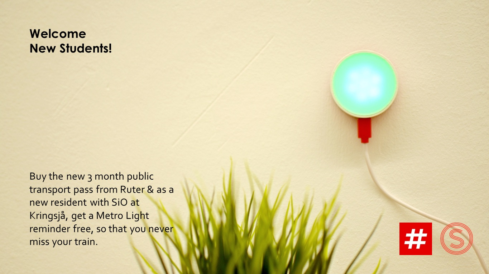
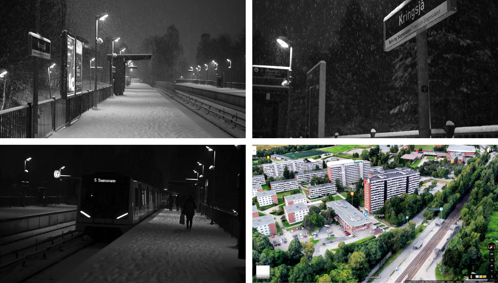
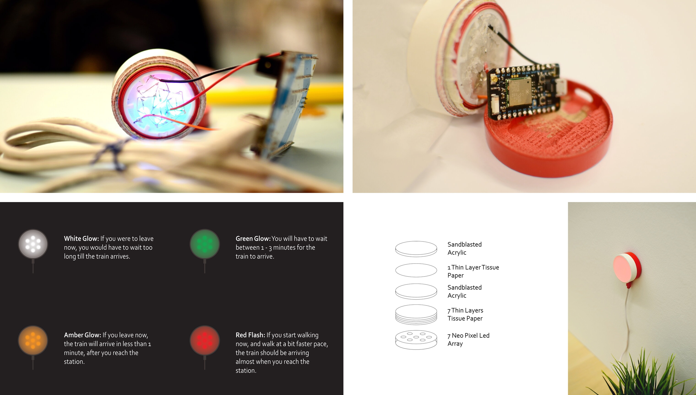
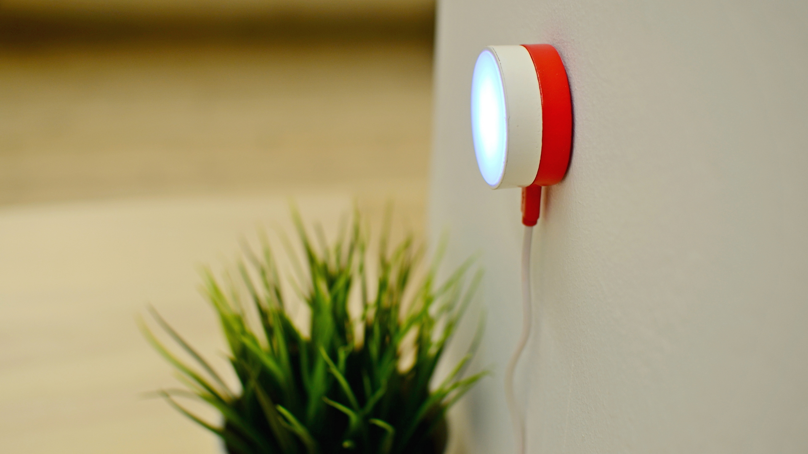

Making the morning commute calmer with MetroLight
Metro Light is a simple and calm little device, which sits on the wall and gently reminds you when to leave home, so that you can catch your morning commute, without rush and without unnecessary waiting.

The project in brief:
Context
Rushing to catch the public transport could be stressful in low frequency areas, such as Kringsjå student village, especially during harsh weather.
Checking the time table on the phone while rushing to get ready is inconvenient and adds to the stress.
Target user
Students living at Kringsjå who tend to miss their train, or usually find themselves running.
"I run when I see others running. I never trust my watch." - Quote from initial user interviews

The process and principle:
Material and medium
Ruter had a wonderful open API, free for public use. This API powered their website as well as all the timetable displays at the stations.
Ruter has an app to check real time departures. So this project was the perfect opportunity to build an IOT device to compare the experience against the app.
Ambient computing and information at a glance
The device was intended to disappear into the background and only come to attention when needed.
Rapid prototyping
3d printing, breadboarding, and quick software iterations helped dial down the experience precisely.
It was important to put the device in the user's environment to gather actionable feedback.

Feedback, result and reflection:
Feedback
“I love it. I can just look at it instead of trying to find my phone in panic while drooling toothpaste all over.” - Student, UIO
Another user had difficulty trusting the device and she felt the need to double check the information on her phone. (Student, BI)
Result
Metro Light does just one thing and does it reliably and delightfully, and in doing so, makes the morning routine, a bit more calm.
Reflections
Bringing information and interaction out of screens, into the real world may create delight and can make computing almost dissolve in the surroundings.
